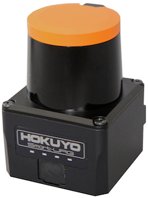
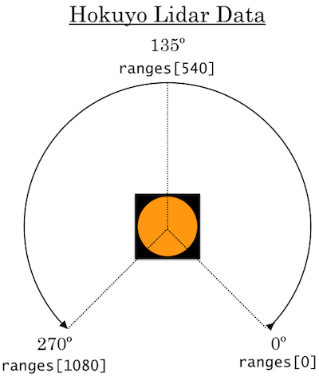
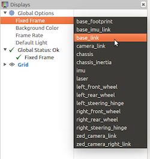
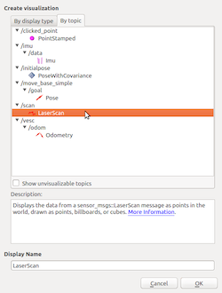

LIDAR Sensor
Hardware
A LIDAR sensor is a distance sensor that spins around.
Our particular sensor is the Hokuyo UST-10LX scanning laser rangefinder.

Specs
- Wiring
- Sends data over ethernet
- Requires external power
- Data
- Detection range: 0.06 m to about 10 m
- Detection accuracy: +- 40 mm
- Scan angle range: 270°
- Scan angle resolution: 1081 steps (≈ 0.25° increment between distance measurements)
- Scan speed: 25 ms (40 Hz)
This sensor has an MSRP of 1.6 US kilodollars. Be aware of this as you conduct your testing.
Usage in ROS
- We've already programmed the car to make a node that gets the LIDAR data and publishes it via messages to the
/scantopic. - Each message is of the type
LaserScan. - The actual scan data lies in the message's
rangesattribute, which contains a list of all the distances (in meters) the LIDAR measured during one scan. -
Other
LaserScanmessage attributes- Some notable ones include
angle_increment,angle_max,angle_min,range_max,range_min,scan_time, andintensities. - For a full list, see: ros.org
- Some notable ones include
- See the diagram to figure out the angles at which the distances are measured:

How to visualize the data onscreen.
- In the car’s terminal (ssh in if necessary), run
teleop. - In the computer’s terminal (or car’s if you have a monitor plugged in), run
rviz. - In rviz, select "base_link" from the "frame" dropdown menu.
- In rviz, press "add".
- In the popup, go to the "By topic" tab and select "LaserScan" from the "\scan" topic.
- Hit the "ok" and enjoy!


Important code snippets:
#imports the dataype/class LaserScan
from sensor_msgs.msg import LaserScan
#a /scan topic subscriber
laser_sub = rospy.Subscriber("/scan", LaserScan, self.laser_callback, queue_size=1)
#a callback function for the subscriber
def laser_callback(scan_data):
print(scan_data.ranges)
If you're working inside another class, try using self.laser_sub = ... and def laser_callback(self, scan_data): ... instead.